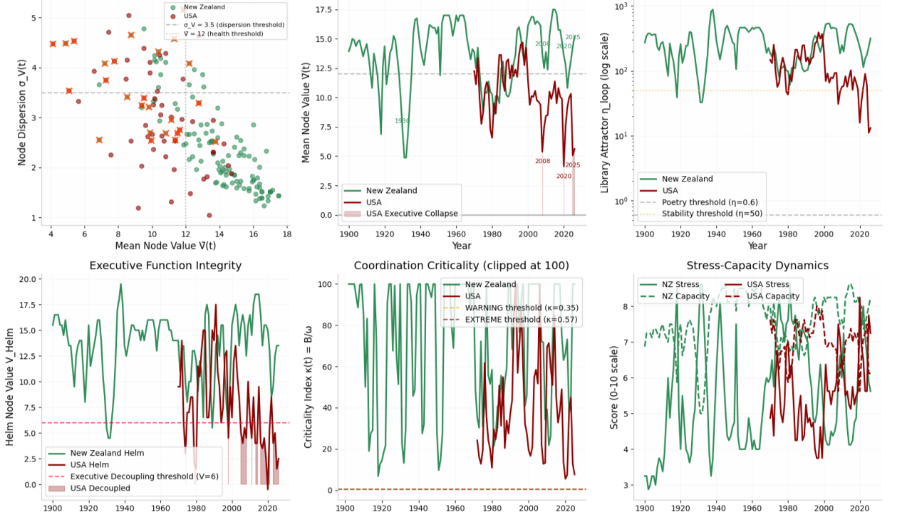

Up to now neuralnations.org functioned as a repository — papers, datasets, and visualisations. This April update introduces new visualisation and analysis tools.
The new NeuralNations.org toolsets — from a repository of papers and datasets to a suite of instruments for studying societies as complex adaptive systems.
Up to now neuralnations.org functioned as a repository — papers, datasets, and visualisations. This April update introduces new visualisation and analysis tools.
The Telescope
Measuring the Coupling Between Story and Structure
Translation — Data to System State
Where the Framework Shows Its Teeth
The most significant development is the Advanced Analysis Dashboard. Here, users can upload a dataset or select from the existing corpus and run a suite of diagnostics directly in the browser. The tools inside this dashboard deserve attention.
From Measurement to Mechanism
Alongside the analytical tools sit two causal mapping environments: Escalation Archetypes and the Failure Modes Map. These move from measurement to mechanism. They expose recurring feedback loops — the Flow–Hands death spiral, rent-seeking traps, Shield capture, institutional amnesia — and allow them to be manipulated, visualised, and exported.
This is the beginning of a shared language for systemic failure.
Psychohistory
Validation

Taken together, these tools mark a transition that is easy to miss if one is focused only on the outputs. At neuralnations.org the study of societies as Complex Adaptive Systems can now not only be read about but interacted with — via a set of instruments that constrain geopolitical claims and locate real disagreements.